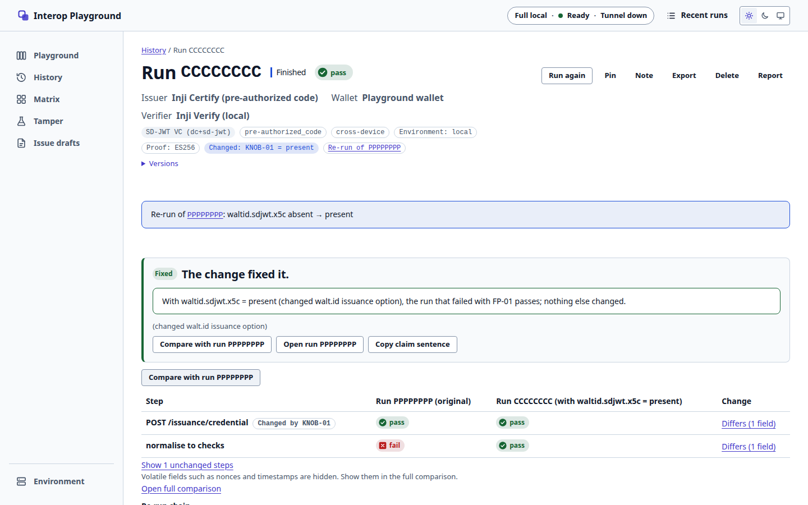
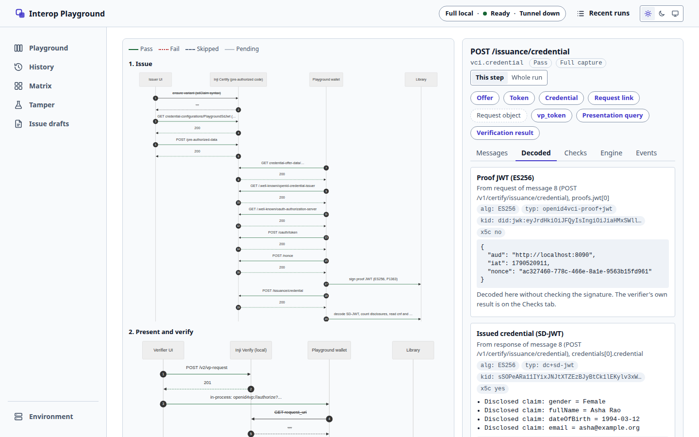
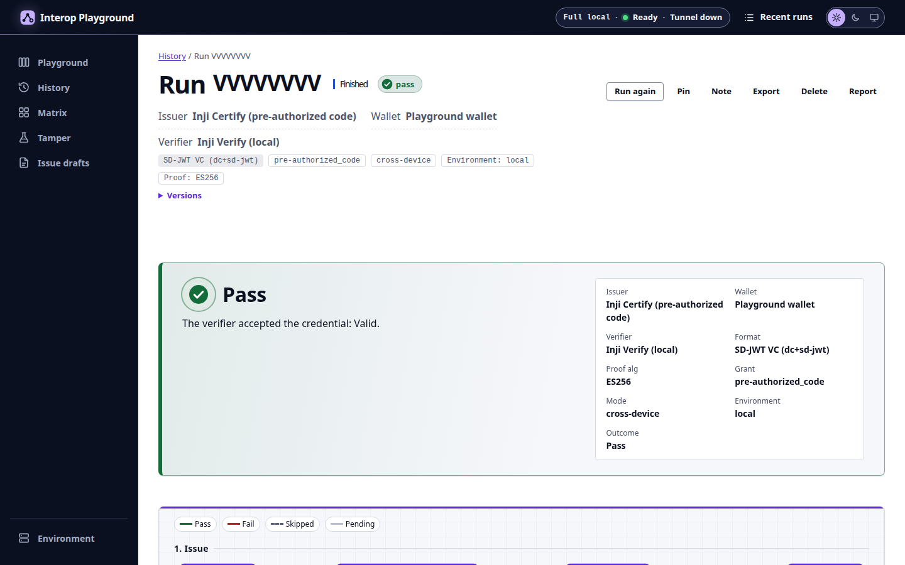
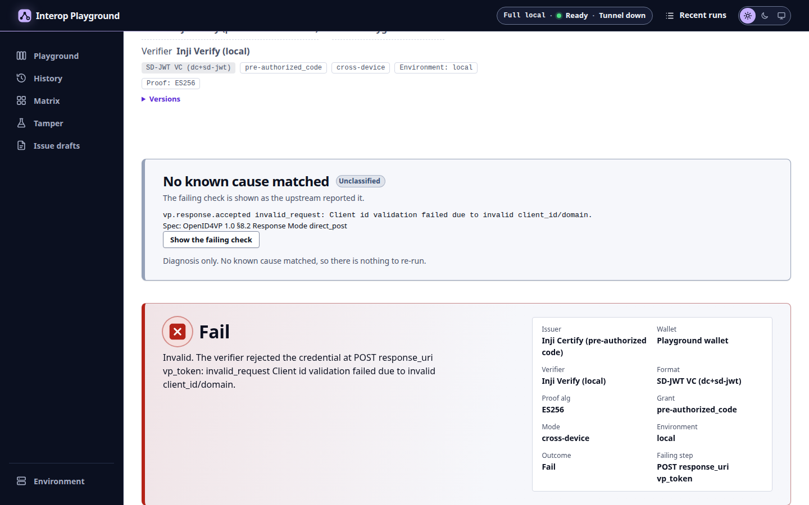

walt.id → wallet → Inji Verify: Fail
At the verdict, ERR_SIGNATURE_VERIFICATION_FAILED.
01M5B6KNNY7DC3YK3CR0ETNBN9
Run Inji issuer → wallet → verifier combinations, see every protocol message, and prove the fix for a failure with a re-run that changes one setting.


The problem
The credential header carries the issuer key without an x5c certificate chain, which Inji Verify requires (gap G-55).
Holds the credential and presents it. Nothing here fails, so nothing here looks wrong.
Issuer, wallet and verifier are built and run by different teams and vendors.
No component shows all the messages of one credential journey in one place.
Each failure is traced by hand, and the fix is guessed rather than shown to work.
What we built
How it works
The backend makes every outbound call itself; each hop is labelled full, partial or none.
Each event is stored before it is streamed, so a finished run replays exactly.
A fix-it re-run is a derived RunSpec with one knob changed and a link to its parent.
Inji services publish no ports; the gateway is the only listener and denies admin paths.
In the demo, 1 of 2

1 2 3 4In the demo, 2 of 2
The three labels of the problem statement, shown live at the real Inji Verify on 2026-10-20.

Signature, holder proof and expiry all check out.

A bad signature is rejected with ERR_SIGNATURE_VERIFICATION_FAILED.
Signature valid, past its expiry date. Inji Verify does not fold it into Invalid.
Presented over OpenID4VP, the expired credential is also reported as Valid-but-Expired (run 01M5CBC7EQY4ZKHPE50C1PC9CJ).
The original angle: fix-it re-runs
At the verdict, ERR_SIGNATURE_VERIFICATION_FAILED.
One proven knob is offered: KNOB-01, waltid.sdjwt.x5c absent → present.
Classified fixed. Proven live on 2026-10-20.
“Changing only waltid.sdjwt.x5c from absent to present makes it pass.”
What we found in Inji
| Draft | Component | Finding | Status |
|---|---|---|---|
| D-04G-55 | Inji Verify | SD-JWT verification requires an x5c header and cannot resolve a did:jwk or JWK issuer key. | Reproduced live by the fix-it pair |
| D-01G-109 | Inji Certify | Returns 500 instead of 400 for a token request without a pre-authorized code, and for an EdDSA proof on an EC key. | Recorded answers in fixtures |
| D-16G-115 | Inji Certify | A wrong tx_code answers invalid_request instead of invalid_grant, and any failed attempt burns the code. | Relied on known-fails list |
| D-08G-112 | inji-openid4vp | Accepts only EdDSA request-object signatures, so it fails against EUDI (ES512) and signed walt.id (ES256) requests. | Relied on the selector greys the cell |
| D-02G-19 | Inji Verify | A tampered SD-JWT disclosure is reported as a missing claim, and the credential is labelled ldp_vc. | Research with recorded traces |
Five of sixteen shown. The full list, with groups for documentation gaps and our own bundle defects, is in docs/gaps.md. Issues are filed upstream by hand only.
Results, v1 (2026-10-20)
SD-JWT 2 of 3, JSON-LD 1 of 1. The one failure is the walt.id cell, fixed by one knob.
docs/interop-report.mdValid, Invalid and Valid-but-Expired, exactly as expected.
docs/evidence/T-47-labels.mdSD-JWT VC (dc+sd-jwt) and W3C VC JSON-LD (ldp_vc), issued and presented.
README, "Formats and labels"FP-01 + KNOB-01: Fail to Pass with one setting changed, classified fixed.
docs/reports/01M5B6M723AQ7T818D36816PRV.mdgit clone, scripts/up.sh, first run; on a host with the images cached.
docs/evidence/T-55-fresh-clone.mdPlus 54 fixture Playwright tests: axe, 320 to 1440 px, light and dark.
README, "Development and tests" (2026-10-21)Who it is for, and what it changes
See where a change breaks interop, with the exact exchange and the spec clause.
Test against real Inji services before integrating; the walt.id issuer is the worked example.
Check which combinations work, with evidence, before a rollout.
Repeatable runs from digest-pinned images and fixture credentials for each label.
The failing exchange, its decoded payload and a matched cause on one screen.
A fix is shown to work by a re-run that changes only that setting.
Bug reports that carry the run, the messages and the spec clause.
Roadmap
The first column is shipped. The other two are planned work, listed in the README as not in v1.
The same runs that prove one fix today can feed a cross-vendor compatibility record: every cell a run, every run a report.
Team and links
Open source under MPL-2.0. Thank you for reading.